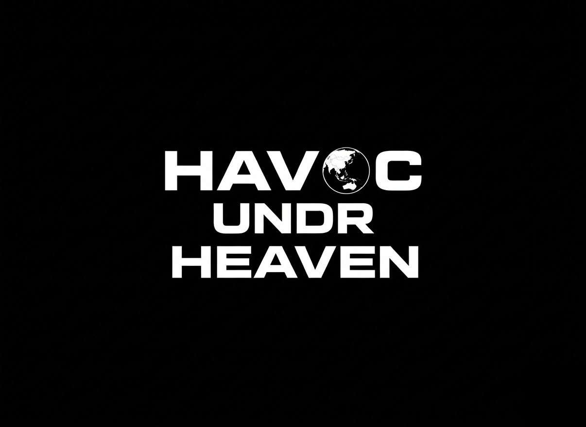

La disputa más peligrosa del mundo. Beijing considera Taiwán una provincia rebelde; Washington mantiene una política de ambigüedad estratégica que cada vez cuesta más sostener. El estrecho es el punto de fricción donde el viejo orden y el nuevo orden se miran de frente.
La disputa del Estrecho de Taiwán tiene sus raíces en la Guerra Civil China de 1945–1949. Cuando las fuerzas comunistas de Mao Zedong derrotaron al gobierno nacionalista del Kuomintang, el líder Chiang Kai-shek y sus fuerzas se retiraron a la isla de Taiwán, donde establecieron la República de China (ROC), proclamándose el gobierno legítimo de toda China.
Beijing opera bajo el principio de "Una sola China" — la posición de que existe un solo Estado chino y que Taiwán es parte de él. La República Popular China nunca ha controlado Taiwán, pero tampoco ha renunciado al uso de la fuerza para "reunificarlo".
"Taiwán no es un problema de seguridad. Es un problema de identidad nacional amplificado por la física de los semiconductores y la geometría de las alianzas del Pacífico."
Taiwán, por su parte, ha evolucionado hacia una democracia funcional con una identidad propia. Las encuestas muestran consistentemente que la mayoría de los taiwaneses se identifican como taiwaneses — no como chinos — y prefieren el statu quo a la unificación bajo los términos de Beijing.
Taiwán produce más del 90% de los semiconductores más avanzados del planeta a través de TSMC. Cualquier interrupción de esa producción — ya sea por conflicto, bloqueo o coerción — tendría consecuencias económicas globales que hacen palidecer cualquier crisis previa de cadenas de suministro.
El estrecho es también el test definitivo de la arquitectura de alianzas estadounidense en el Indo-Pacífico. Si Washington no puede — o no quiere — defender Taiwán, el valor de sus compromisos de seguridad en toda la región se derrumba.